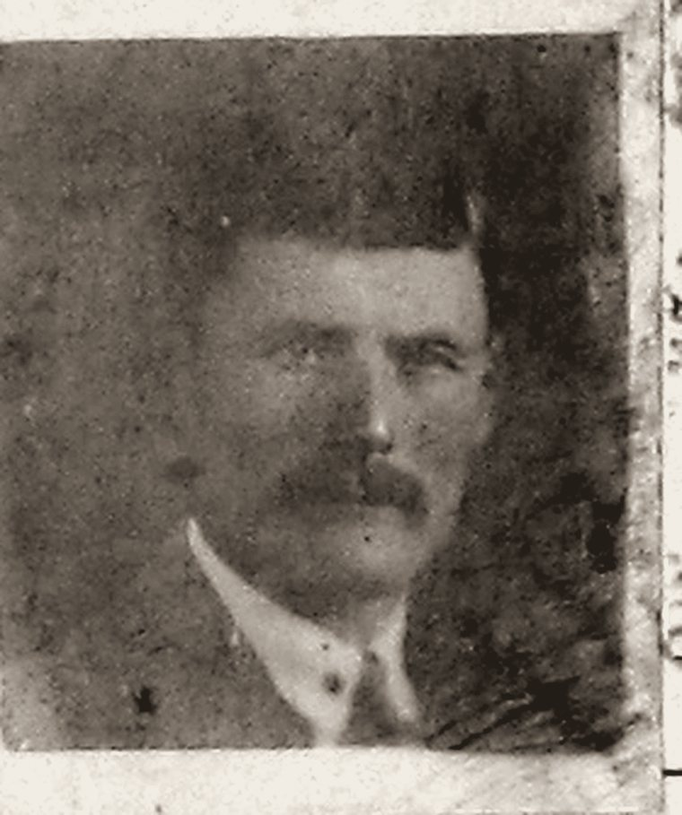
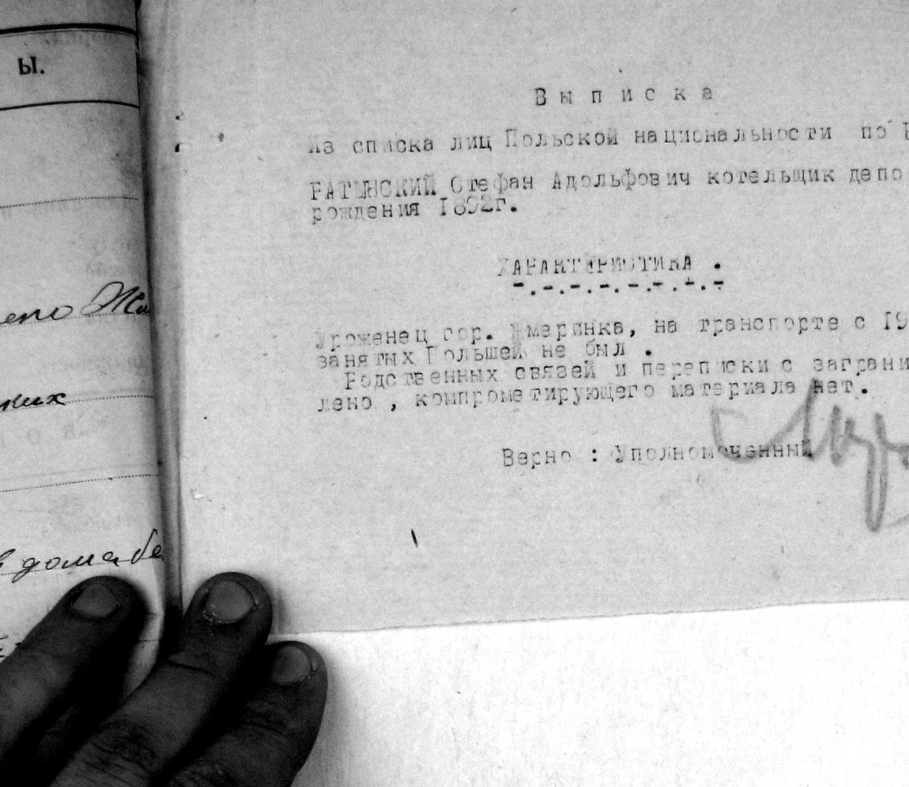
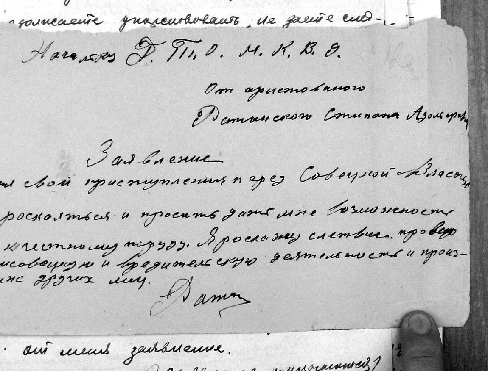
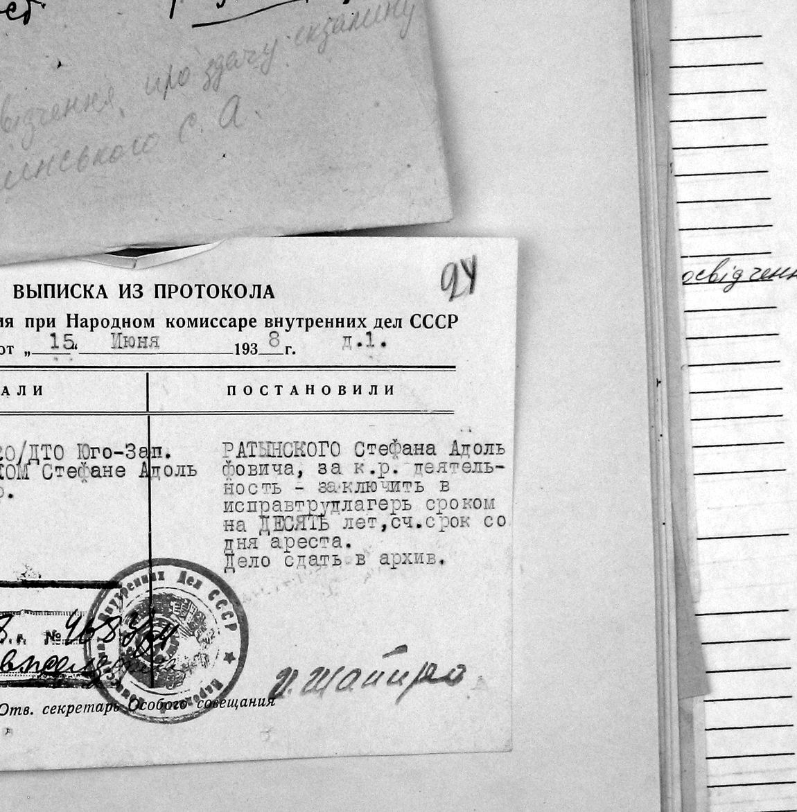
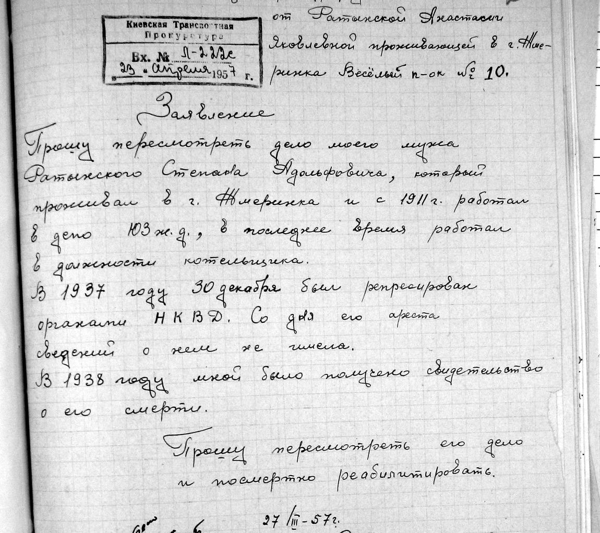
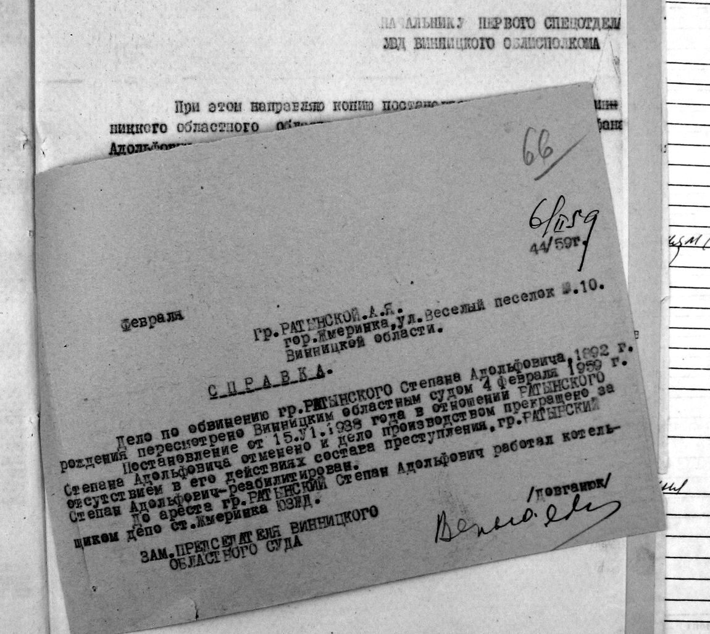
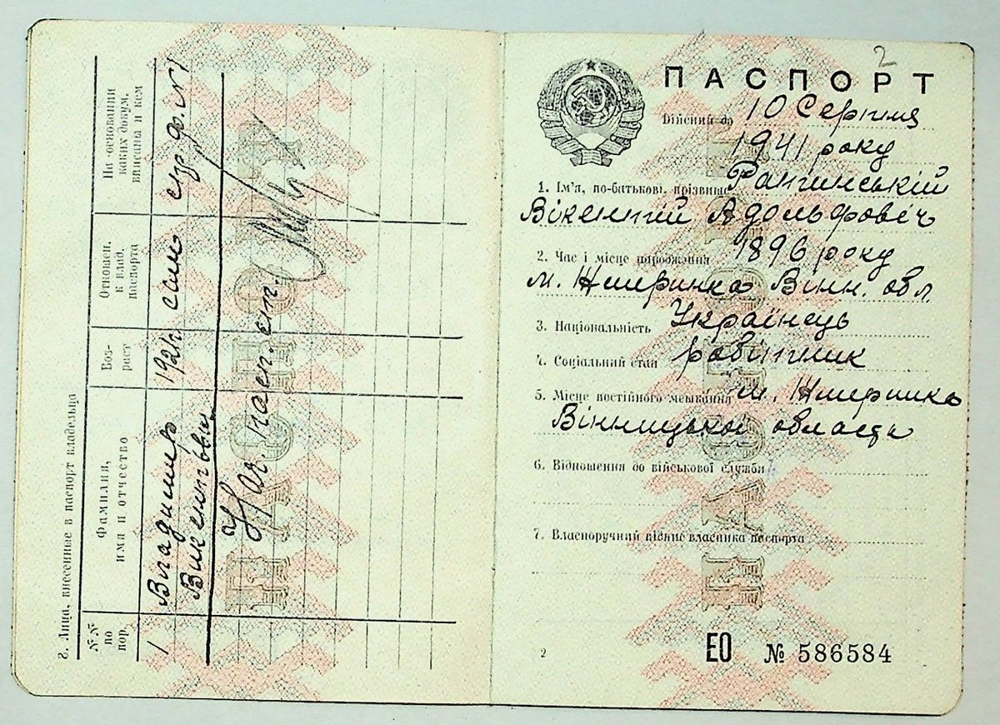
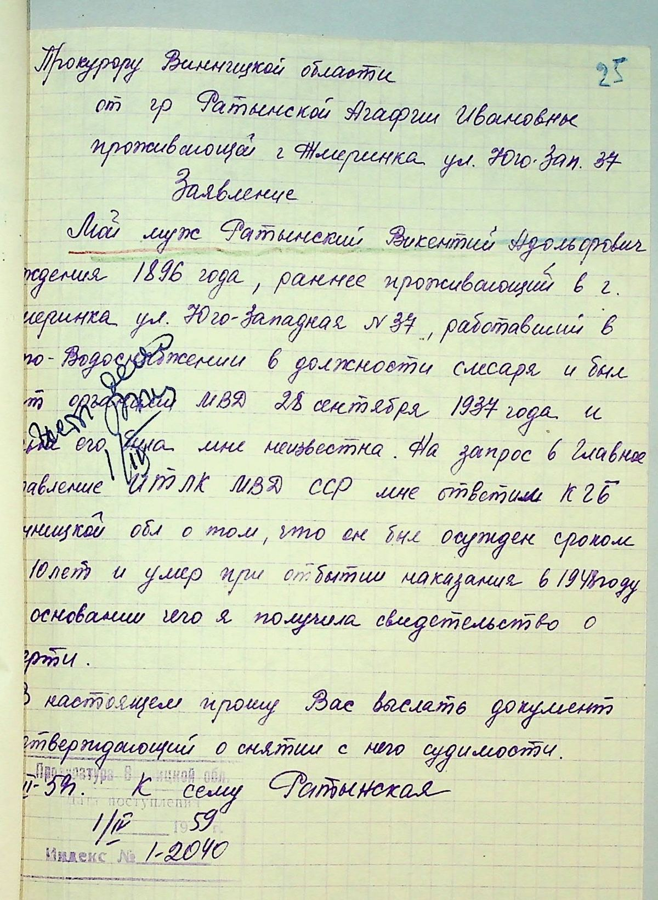

Жмеринка · 1892–1938
Степан Адольфович Ратинський, котельник паровозного депо

Це його єдина відома фотографія. Вона збереглася тільки тому, що посвідчення з нею забрали при обшуку в ніч арешту й підшили до слідчої справи. Усе, що нижче, — з тієї самої справи.
Сини Адольфа Ратинського
Їх забрали протягом чотирьох місяців 1937–38 років, у межах так званої польської операції НКВС. Родина була польська, римо-католицька і залізнична: Жмеринка була головним вузлом Поділля, і транспортних поляків брали бригадами.
Котельник паровозного депо. Заарештований 30 грудня 1937. Помер 1938 року.
Бригадир слюсарів водопостачання. Дружина Агафія, син Володимир 1921 року. Етапований до Ухтпечлагу в лютому 1938, помер 1 лютого 1939.
Виїхав до Барнаула, директор цегельного заводу. Страчений 17 січня 1938.
Жоден із трьох не дожив до сорока п'яти.
Документ, з якого почалася справа
В основі справи лежить не донос і не матеріали стеження, а канцелярський витяг зі списку. Останні три слова в ньому варто прочитати двічі.
Виписка зі списку осіб польської національності по РОДТВ Жмеринка. Ратинський Стефан Адольфович, котельник депо Жмеринка, 1892 р. н.
Характеристика: уродженець м. Жмеринка, на транспорті з 1911 р. Родинних зв'язків і листування з-за кордону не встановлено, компрометуючого матеріалу немає.
Аркуш 7 справи, грудень 1937

За п'ять місяців до цього, 26 липня 1937 року, та сама залізниця видала йому посвідчення котельника з формулюванням «виявив хороші техніко-практичні знання». Обидва папери тепер лежать в одній справі, за десять аркушів один від одного.
Від арешту до зізнання
Питання слідчого на останньому допиті починається так:
«Ви, перебуваючи під арештом близько чотирьох місяців, упорствуєте, не даєте слідству правдивих показань… Чи маєте намір дати правдиві показання?»
Протокол допиту, 17 квітня 1938
Того ж дня він написав заяву — власною рукою, єдиний його текст у всій справі.

«Шкідництво», у якому його змусили зізнатися, — сторонні предмети, залишені в котлах паровозів. У справі немає жодного акта, жодної експертизи, жодного речового доказу. Тільки зізнання після ста вісімнадцяти днів тюрми.
15 червня 1938
«Слухали: 179. Справа № 3920/ДТВ Півд.-Зах. з. д. про Ратинського Стефана Адольфовича, 1892 р. н.
Виписка з протоколу Особливої наради при НКВС СРСР
Постановили: за к-р діяльність — ув'язнити у виправтрудтабір строком на ДЕСЯТЬ років, рахуючи строк з дня арешту. Справу здати в архів.»

Це той самий край, куди за чотири місяці до нього вивезли брата Вікентія. Обох братів із Жмеринки етапували в Комі.
Що знала родина
Далі в справі — порожнеча завдовжки у два десятиліття. Що відбувалося за цей час удома, відомо з одного речення, написаного через дев'ятнадцять років:
«У 1937 році 30 грудня був репресований органами НКВД. З дня його арешту відомостей про нього не мала. У 1938 році мною було одержано свідоцтво про його смерть.»
Анастасія Яківна Ратинська, 27 березня 1957
Вона писала тричі. Спершу до Києва, потім до Москви, потім нагадувала, бо відповіді не було.

Через двадцять один рік
Перевірка 1958 року розібрала обвинувачення по кістках. Обидва свідки, чиї слова відправили Степана в табір, самі були заарештовані тим же відділом і розстріляні в 1938-му. Слідчий, який вів справу, у 1939 році сам пішов під трибунал за фальсифікацію справ і масові безпідставні арешти — п'ять років таборів.
А ті двоє, кого Степан під тиском назвав своїми спільниками, через двадцять років прийшли свідчити на його користь:
«Знає його як чесну і працьовиту людину, ніяких антирадянських настроїв за ним не помічав, шкідництвом він ніколи не займався і в нього немає підстав вважати його антирадянською людиною, бо знає його добре.»
Показання свідка, 1958
4 лютого 1959 року постанову Особливої наради скасували, справу припинили за відсутністю складу злочину. Довідку надіслали додому — на ім'я вдови.

Крім самої долі
Про Георгія в родині не лишилося нічого. Рідний брат діда, він досі відсутній у родовому дереві. Якщо він пережив війну — у нього можуть бути нащадки, тобто живі родичі, яких ми не знаємо.
Справа Вікентія, 22 вересня 2026
Через три тижні після справи Степана Вінницький архів видав другу — на його брата Вікентія. Шістдесят один аркуш, від ордера на арешт до постанови обласного суду про припинення справи. З неї родина отримала двох людей, яких не знала.

Родині цього не сказали. Через двадцять років на запит удови відповіли, що він помер при відбутті покарання у 1941 році, — і на цю неправдиву дату їй видали свідоцтво про смерть. Він на той час уже два роки як лежав у землі Комі.
«Мій чоловік Ратинський Вікентій Адольфович, 1896 року народження… був арештований органами МВД 28 вересня 1937 року, і доля його мені невідома… Прошу вислати документ, що підтверджує зняття з нього судимості».
Агафія Ратинська, заява прокуророві Вінницької області, 1 лютого 1959

Перевірка 1959 року з'ясувала те саме, що і в справі Степана: доказів на момент арешту не було, свідчення записані загальними фразами без жодного факту, троє обвинувальних свідків самі сиділи з 1938-го. А слідчий, який вів справу, — той самий лейтенант Клятишев — у 1939 році був засуджений за фальсифікацію слідчих матеріалів. Президія Вінницького обласного суду постанову Особливої наради скасувала, справу припинила за відсутністю складу злочину.
Володимир пройшов війну. Сержант, у Червоній армії з жовтня 1940-го, військовий листоноша 50-ї армії; двічі поранений, двічі контужений, після контузії втратив гучність мови. Медаль «За відвагу» за Осовець, орден Червоної Зірки. Якщо він повернувся додому — його діти й онуки сьогодні наші найближчі родичі по цій гілці, і ми їх не знаємо.
Відкриті питання
Де саме і коли він помер у 1938 році. Свідоцтво про смерть було видане родині того ж року, отже існує актовий запис — його ще треба знайти. Прямої довідки про табір у справі немає, лише напрямок етапу.
Що сталося з Георгієм і що сталося з Володимиром після війни. Де і коли померла Агафія Іванівна. Звідки рід прийшов на Жмеринку — місто виникло на порожньому місці в 1865 році, отже Адольф народився деінде; за його власними документами він міщанин Динабурзького повіту, тобто нинішнього Даугавпілса, але гнізда там ми поки не знайшли.
Одне ім'я, якого бракувало, уже знайшлося: прабабусю звали Юзефа Квятковська — так записано в метриці хрещення Степана за 1893 рік, яку архів видав у вересні 2026-го.